Karta produktu:
obecna vs nowe wersje
Maszynka WMARK NG-139 Czarna, 229,99 zł. Po lewej zawsze żywy 4barber.pl (zrzut 27.09.2026, po zamknięciu okien cookies i zniżki), po prawej propozycje v6 (v1 dopracowane), v4 i v3. Te same dane, ten sam produkt, inna kolejność i inny sposób przekonywania.
Dziś pierwszy ekran to zdjęcie, licznik wysyłki i przyklejony „Dodaj do koszyka” bez ceny. Nazwa zaczyna się na 811 px, cena ok. 1 280 px, przycisk w treści na 1 881 px. W każdej nowej wersji nazwa, cena i przycisk są razem w pierwszym ekranie.
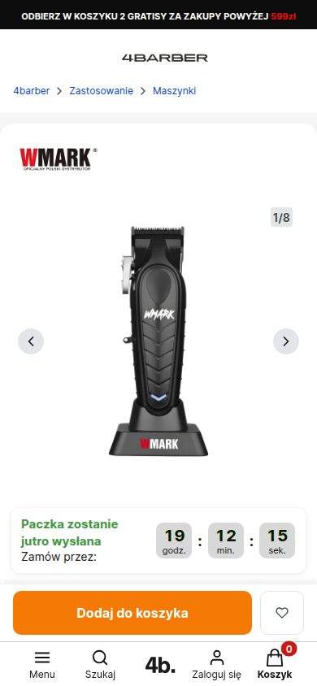
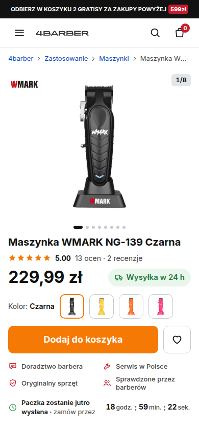
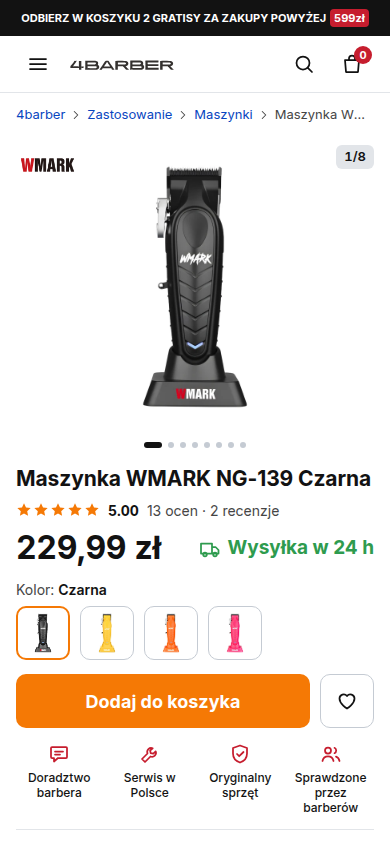
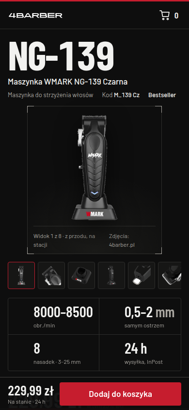
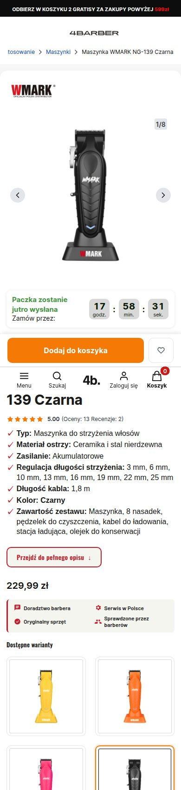
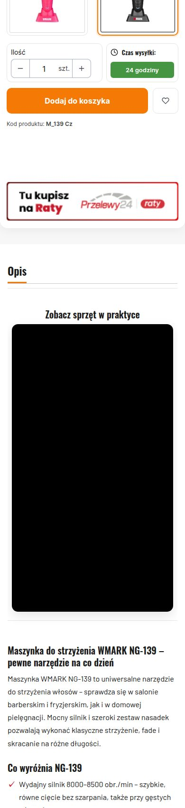
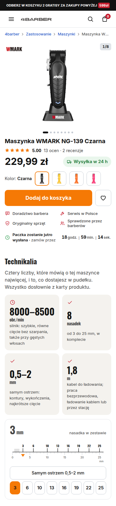
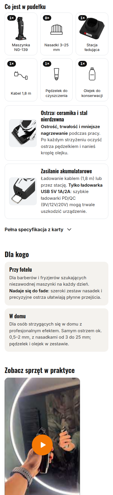
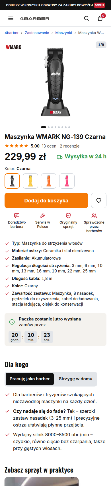
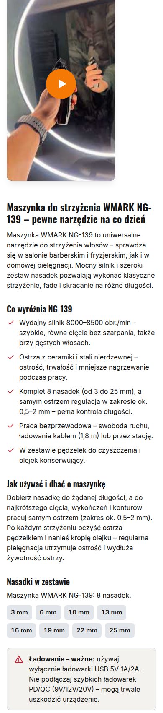
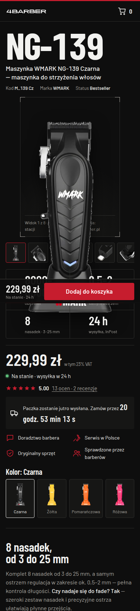
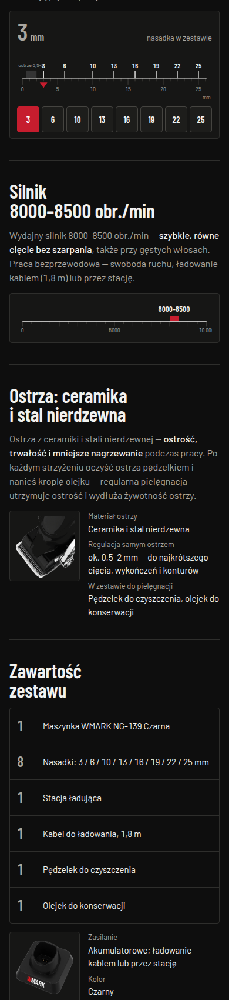
Dziś na desktopie cena jest widoczna, ale „Dodaj do koszyka” zaczyna się na 1 039 px, czyli pod krawędzią ekranu 900 px. W v6, v4 i v3 przycisk mieści się w pierwszym ekranie (v6: do 586 px, v4: do 821 px, v3: do 432 px).
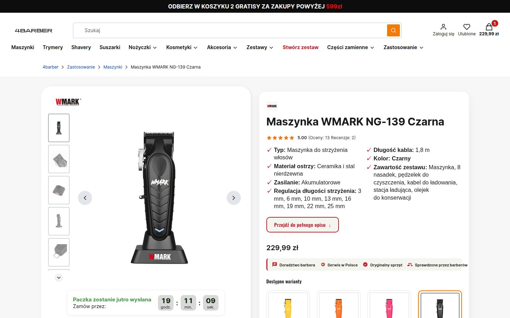
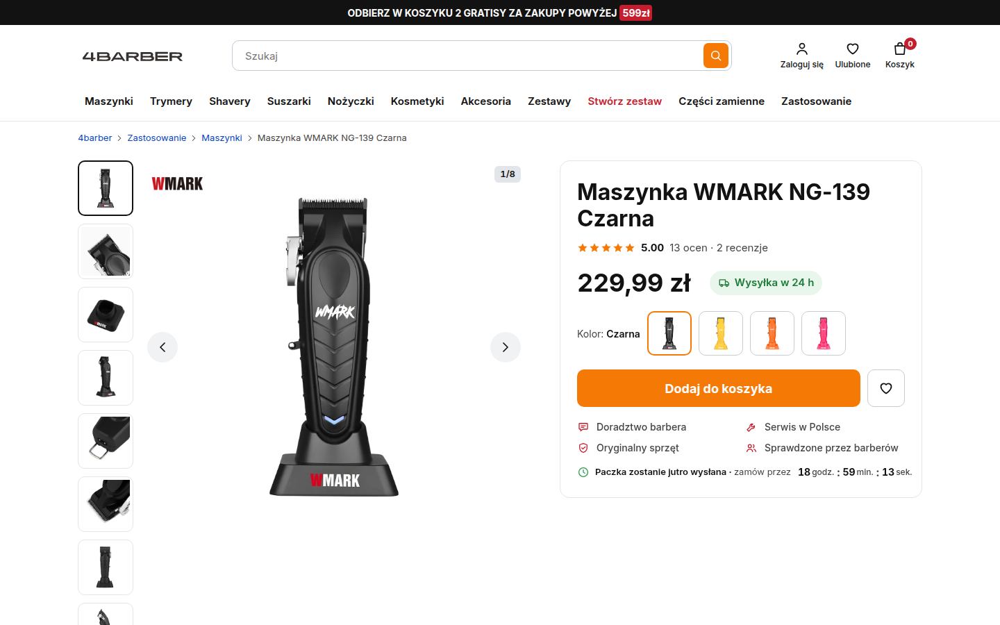
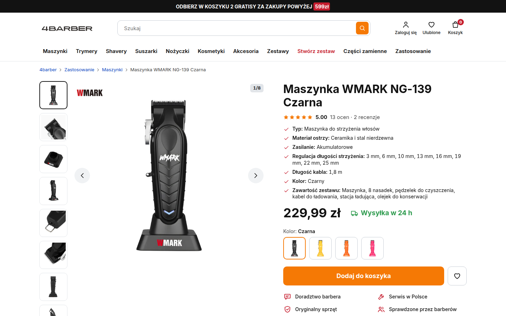
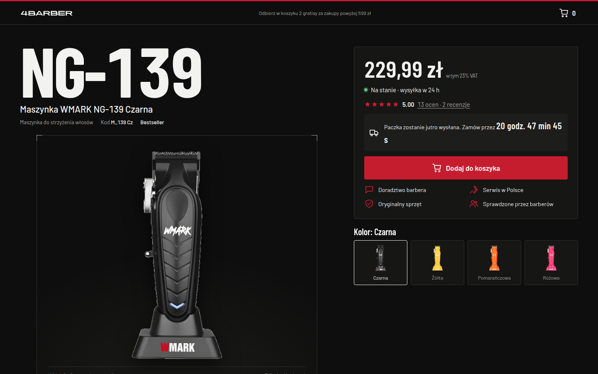
| Co | Obecna karta (27.09) | v6 „Porządek” (v1 dopracowane) | v4 + technikalia | v3 „Karta techniczna” |
|---|---|---|---|---|
| Telefon: nazwa produktu i cena | nazwa 811 px, cena ok. 1 280 px (drugi ekran) | w pierwszym ekranie | w pierwszym ekranie | w pierwszym ekranie |
| Telefon: „Dodaj do koszyka” w treści | 1 881–1 935 px (ponad 2 ekrany niżej) | 638–692 px | 674–728 px | pasek na dole od 0 px |
| Telefon: przycisk przyklejony przy przewijaniu | tak, ale bez ceny i nazwy (nad paskiem Menu / Szukaj / Konto / Koszyk) | tak, z ceną | tak, z ceną | tak, stale, z ceną |
| Desktop: „Dodaj do koszyka” | 1 039 px (pod ekranem 900 px) | do 586 px | do 821 px | do 432 px |
| Parametry techniczne | lista ✓ przed ceną (telefon i desktop) | pod spodem: 4 liczby w kaflach, linijka nasadek do dotknięcia, „Co jest w pudełku” na zdjęciach, pełna tabela w rozwijaku | lista ✓ w prawej szpalcie pod oceną (desktop); na telefonie pod ikonami zaufania | 4 liczby w pasie + linijka nasadek, skala obrotów, lista części |
| Warianty kolorów | 4 kafle ok. 170 px każdy, między ceną a przyciskiem | 4 próbki 54 px | 4 próbki 54 px | 4 chipy z miniaturą |
| Drugi przycisk konkurujący z „Dodaj” | czerwony „Przejdź do pełnego opisu” | brak | brak | brak |
| Wideo „Zobacz sprzęt w praktyce” | osadzenie YouTube bez miniatury (czarny prostokąt do załadowania) | miniatura + play, iframe po kliknięciu | jak v1 | jak v1 |
| Opinie barberów z nazwiskiem na karcie | brak (tylko na stronie głównej) | 3 cytaty ze zdjęciem | 3 cytaty ze zdjęciem | 4 cytaty, 3 ze zdjęciem |
| Próg darmowej dostawy (250 zł) na karcie | dopiero w modalu po dodaniu | na karcie i w panelu | na karcie i w panelu | na karcie i w panelu |
| Długość strony na telefonie | 6 239 px | 7 323 px | 6 523 px | 8 181 px |
| Wygląd | Inter, biel, pomarańczowy przycisk, czerwone akcenty | bez zmian | bez zmian | czarny arkusz, Barlow Condensed, czerwień 4barber |
| Czego nie ma w makietach, a jest dziś | — | okno cookies i popup zniżki (edrone) celowo pominięte: to warstwa sklepu, nie karty; decyzja o nich osobno | ||
Pozycje w px mierzone w Playwright na szerokości 390 (telefon) i 1440 (desktop), 27.09.2026 ok. 21:55. Treść, ceny i opinie we wszystkich wersjach identyczne z żywą kartą.